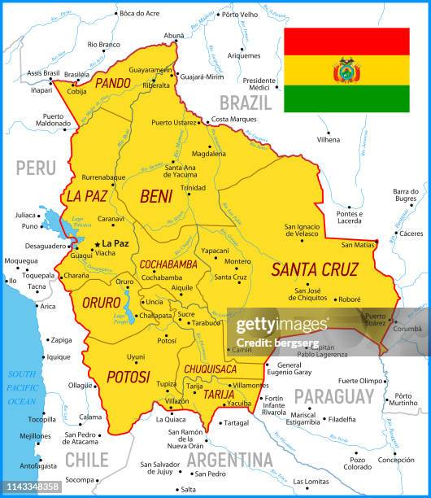

Para onde vamos?
A missão terá inicio no dia 08/10/2025 e finalizada no dia 18/10/2025. Durante esses 10 dias os missionarios darão assistencia para o Orfanato L'Esperance em Cochabamba, na Bolívia. Os alunos também farão atividades na Universidade Adventista da Bolívia, localizada em Cochabamba

Quem iremos ajudar?
Famílias em situação de vulnerabilidade, com foco em crianças e idosos.

Objetivo da Missão
Durante 10 dias os missionarios participarão de atividades como:
- Apoio a projetos sociais e humanitários
- Evangelismo e ações com as crianças
- Reformas em espaços comunitários
- Cultos e momentos de espiritualidade

Faça parte da missão!
Veja abaixo as formas de colaborar com essa causa:
🙏 Ajude com oração
Ore pela equipe missionária e pelas vidas que serão alcançadas.
📣 Compartilhe este link
Ajude divulgando essa missão em suas redes sociais.
💰 Ajude com Pix
Chave Pix: missao.bolivia@apoio.com